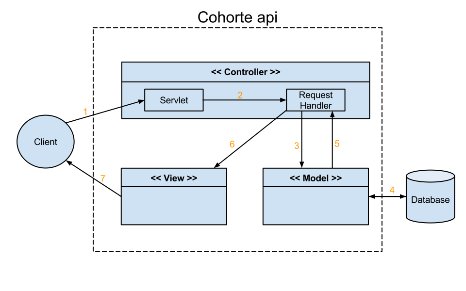

Software Architecture¶
Model View Controller (MVC) is a software architecture pattern. The goal of that pattern is to separate the data (the Model) from the way they are displayed (the View) and how they are manipulated (the Controller).
In RESTBuilder, here is how the MVC was implemented :

The application we wish to provide beeing an API, and thus implying a lot less user interaction, this pattern differ from a classic MVC. It was inspired by the J2EE pattern described here